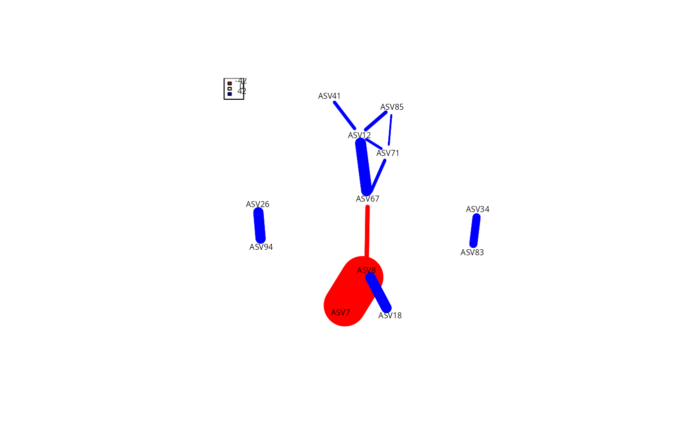

Species-association network of a phyloseq object using netassoc
Source:R/netassoc_network_pq.R
netassoc_network_pq.Rd![[Experimental]](figures/lifecycle-experimental.svg)
Infer a species-association network from a phyloseq object with
netassoc::make_netassoc_network(). The method (Morueta-Holme et al. 2016)
compares the observed co-occurrence structure to a null model of random
assembly and keeps only the taxa pairs whose association departs
significantly from that expectation, returning a partial-correlation
network of the taxa.
Usage
netassoc_network_pq(
physeq,
numnulls = 100,
method = "partial_correlation",
plot = FALSE,
verbose = FALSE,
...
)Arguments
- physeq
(required) A
phyloseq-classobject obtained using thephyloseqpackage.- numnulls
(int, default 100) Number of null-model replicates used to build the expectation. Increase for real analyses; the default keeps the examples and tests fast.
- method
(default "partial_correlation") Association measure passed to
netassoc::make_netassoc_network().- plot
(logical, default FALSE) Draw the heatmaps produced by
netassoc::make_netassoc_network(). FALSE by default to avoid a plotting side effect; the returned object still contains the networks.- verbose
(logical, default FALSE) Passed to
netassoc::make_netassoc_network().- ...
Other parameters passed on to
netassoc::make_netassoc_network().
Value
The list returned by netassoc::make_netassoc_network(). Its
network_all element is an igraph graph of the significant
associations.
References
Morueta-Holme, N. et al. (2016) A network approach for inferring species associations from co-occurrence data. doi:10.1111/ecog.01892 .
Examples
if (requireNamespace("netassoc", quietly = TRUE)) {
ps <- prune_samples(sample_names(data_fungi_mini)[1:5], data_fungi_mini)
ps <- clean_pq(ps, silent = TRUE)
top_taxa <- names(sort(taxa_sums(ps), decreasing = TRUE))[1:20]
ps <- prune_taxa(top_taxa, ps)
res <- netassoc_network_pq(ps, numnulls = 20)
netassoc::plot_netassoc_network(res$network_all)
}
#> .
#> Warning: 1 instances of variables with zero scale detected!
#> Warning: 1 instances of variables with zero scale detected!
#> ..
#> Warning: 1 instances of variables with zero scale detected!
#> Warning: 1 instances of variables with zero scale detected!
#> ....
#> Warning: 1 instances of variables with zero scale detected!
#> Warning: 1 instances of variables with zero scale detected!
#> ..
#> Warning: 1 instances of variables with zero scale detected!
#> Warning: 1 instances of variables with zero scale detected!
#> ....
#> Warning: 1 instances of variables with zero scale detected!
#> Warning: 1 instances of variables with zero scale detected!
#> ......
#> Warning: 1 instances of variables with zero scale detected!
#> Warning: 1 instances of variables with zero scale detected!
#> .
#> Warning: Non-positive edge weight found, ignoring all weights during graph layout.
